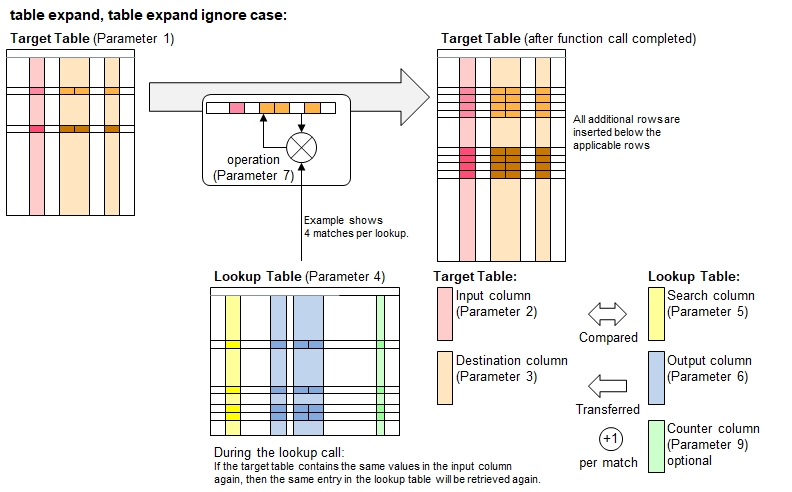

Function Names
table expand, table expand ignore caseDescription
These functions work very similarly like table integrate(). Instead of stopping at the first match in the lookup table, this function family looks up all entries in the lookup table. The search procedure through the lookup table will always be top-down. In case 2 or more matching enties are found in the lookup table, then the following happens:
- The row in the target table will be duplicated in the next row below, where the remaining rows below shift down by 1 row.
- The looked-up information from the output columns will be integrated into the corresponding destination columns using the operation defined by the table integration operation identifiers.
- Some operation identifiers make use of special rules for dealing with blank contents in the lookup table.
- In case of no matches, the row stays unchanged, i.e. the row in the target table will not be deleted.

This functions described here provide the option to select rows (8th function parameter) and counting the lookup matches in the lookup table
(9th function parameter).
Call as: procedure or function
Restrictions
Indirect parameter passing is disabled
Parameter count
7 - 9 (For parameter description and return values: see table integrate() )
Examples
table initialize( nute facts, // Nutritional facts, source: ndb.nal.usda.gov
{ { Food, Ingredient, Portion },
{ potato chips, fat, 0.34 },
{ potato chips, carbohydrates, 0.50 },
{ potato chips, sodium, 0.08 },
{ potato chips, proteins, 0.07 },
{ potato chips, others, '' }, // Remaining weight subtracted from above (--> operation identifer 'mul')
{ broccoli, water, 0.90 },
{ broccoli, proteins, 0.03 },
{ broccoli, carbohydrates, 0.06 },
{ broccoli, others, '' }, // Remaining weight subtracted from above (--> operation identifer 'mul')
{ spring water, water, 1.00 } } );
table initialize( target, { { Name, Favorite Food, Weight },
{ Rafael, Broccoli, 200 }, { Steve, Parmesan cheese, 100 },
{ George, Potato chips, 50 }, { Fred, Spring water, 1000 } } );
echo("Target table before looking up with expanding contents:");
table list ( target );
table expand ignore case( target, Favorite Food, { Ingredient, Weight }, nute facts, Food,
{ Ingredient, Portion }, { overwrite, mul} );
// Note that food portions are multiplied with the weight of the food.
echo("After expanding (listing ingredients and calculating their weights):");
table list ( target );
Output
Target table before looking up with expanding contents:
0 : Name | Favorite Food | Weight
1 : Rafael | Broccoli | 200
2 : Steve | Parmesan cheese | 100
3 : George | Potato chips | 50
4 : Fred | Spring water | 1000
After expanding (listing ingredients and calculating their weights):
0 : Name | Favorite Food | Weight | Ingredient
1 : Rafael | Broccoli | 180 | water
2 : Rafael | Broccoli | 6 | proteins
3 : Rafael | Broccoli | 12 | carbohydrates
4 : Rafael | Broccoli | 2 | others
5 : Steve | Parmesan cheese | 100 |
6 : George | Potato chips | 17 | fat
7 : George | Potato chips | 25 | carbohydrates
8 : George | Potato chips | 4 | sodium
9 : George | Potato chips | 3.5 | proteins
10 : George | Potato chips | 0.5 | others
11 : Fred | Spring water | 1000 | water
See also
table expand fast
table expand smart
table expand fast smart
table integrate
table lookup